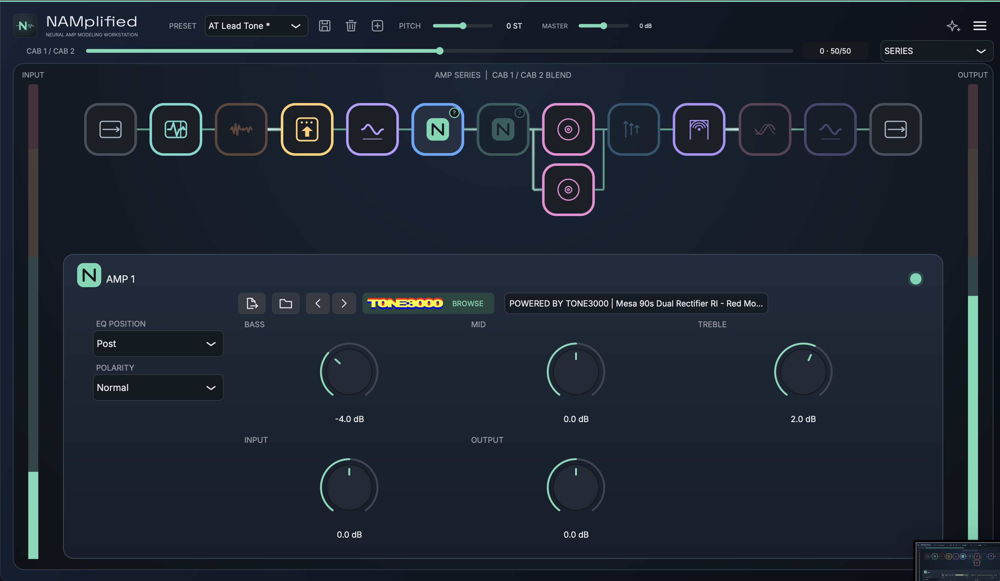
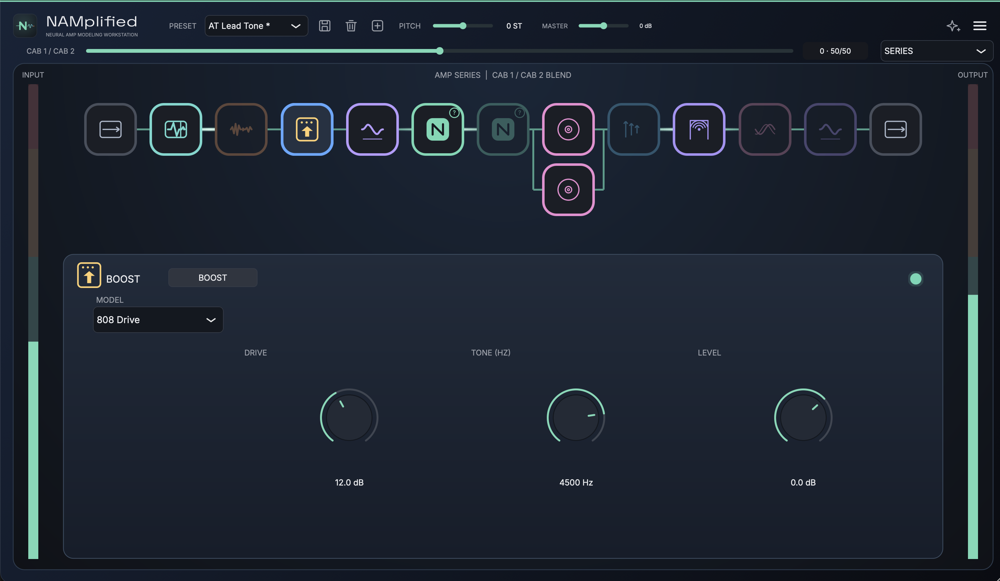
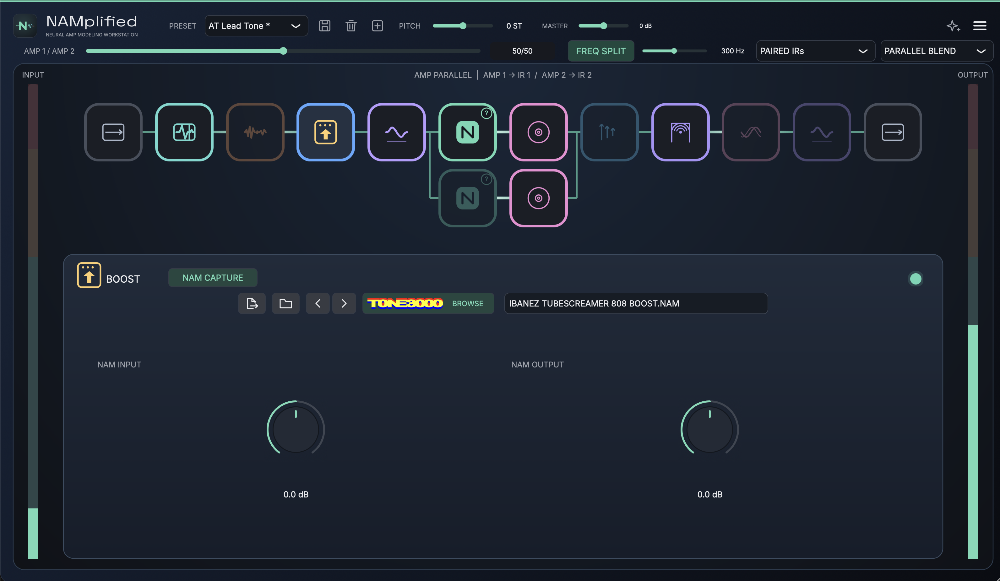
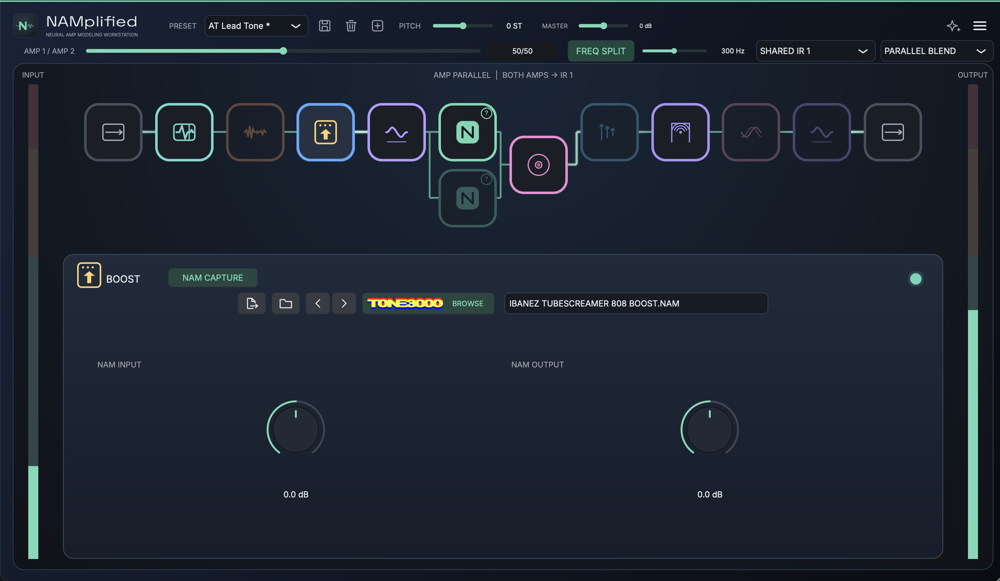
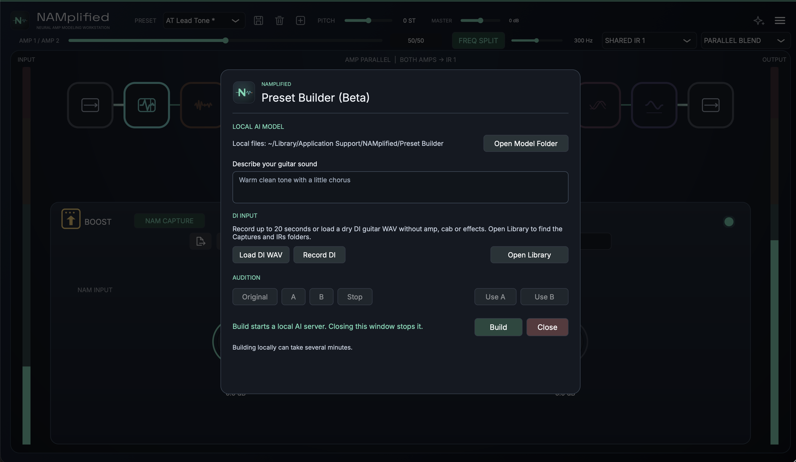

01 / BEFORE THE AMP
Give the amp something to work with.
Tighten the input with a gate, FET compressor and pre EQ. Choose Clean Boost or 808 Drive, or load a pedal capture into the Boost slot.
GUITAR SIGNAL CHAIN / MACOS
NAMplified puts pedals, two Neural Amp Modeler captures, cabinet IRs and post effects on one board. Click a block to shape its sound while the whole chain stays in view.
Explore the rig ↓
01 / THE RIG
See the whole chain and open the controls for any block as you shape your tone.
01 / BEFORE THE AMP
Tighten the input with a gate, FET compressor and pre EQ. Choose Clean Boost or 808 Drive, or load a pedal capture into the Boost slot.
02 / AMPS & CABS
Load two .nam captures and shape each with bass, mid and treble EQ before or after the model. Blend two cabinet impulse responses and EQ them independently.
03 / AFTER THE AMP
Add a ping pong delay, a Room, Plate or Cloud reverb, or chorus. Reorder effects within their section and finish with post EQ.
02 / ROUTING
Open each view to see how NAMplified redraws the path when you change the routing.
Feed one active amp into the next, then blend the two cabinet IRs to taste.

Run two amp and cab pairs side by side. Blend a cleaner path with a dirtier one, or use the optional frequency split to feed different bands to each amp.

Blend the amps before a shared cabinet IR. Change the amp balance while keeping the same cabinet sound.

03 / PRESET BUILDER · BETA
“Warm clean tone with a little chorus.”
After the first setup, the builder runs locally on your Mac.

04 / CAPTURE LIBRARY
Load your own .nam files and cabinet IRs, or browse and select individual captures through the integrated TONE3000 browser. Presets reuse files from a shared library, and the previous and next controls let you step through related captures.
NAMplified is an independent project and is not affiliated with or endorsed by TONE3000.
05 / RELEASE STATUS
NAMplified currently builds for macOS as a standalone app, Audio Unit and VST3. Public downloads are not available yet.